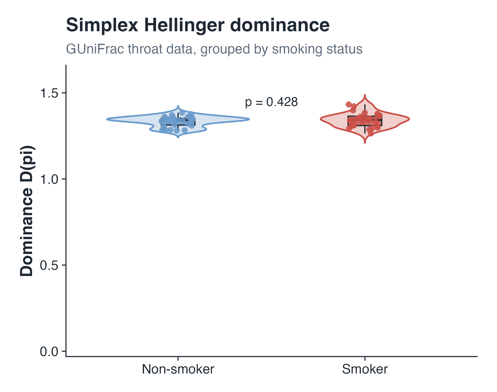
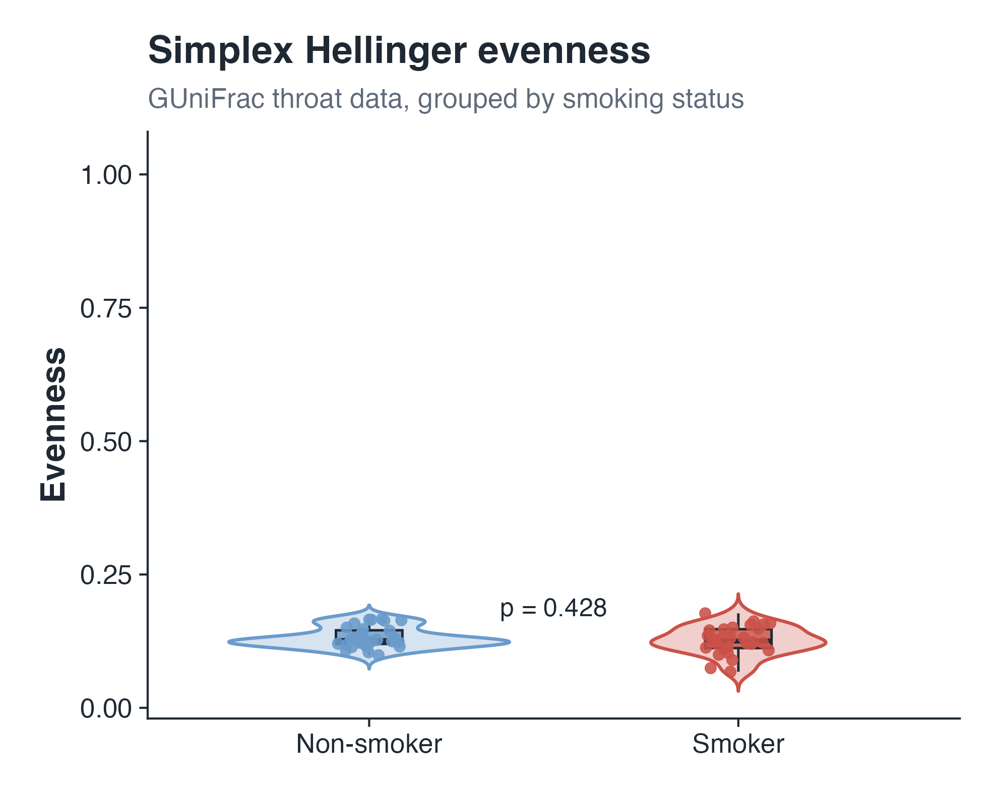
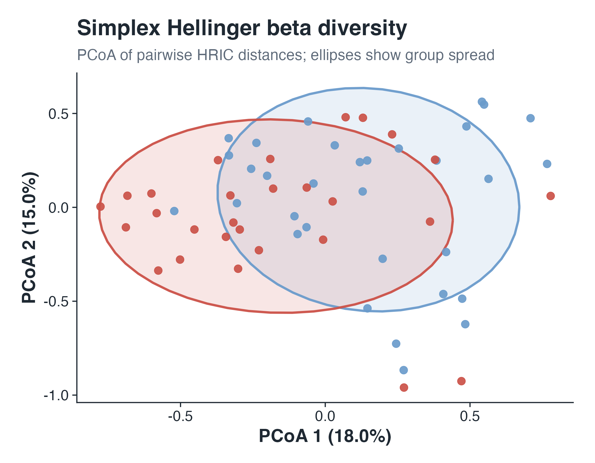

AHC and CLR transformations on zero-containing compositions
Compositional data usually arrive as counts. Each sample's counts \(n\)
are normalized to a relative abundance \(\pi_i = n_i/\sum_j n_j\), and the
transformations act on \(\pi\). The Arc-Hellinger Centered (AHC)
transformation maps the closed simplex through a square-root geometry and
stays finite at exact zeros. The Centered Log-Ratio (CLR) transformation
needs strictly positive components, so any zero must be replaced first.
The plots below show that difference point by point.
The plots fix \(p=3\), the only case that draws directly in three
dimensions; the definitions hold for general \(p\).
Where to start
Load the boundary or near-zero preset.
Pick the ε scale (counts or abundance), then drag \(\varepsilon\).
Watch where the AHC and CLR coordinates land, and check the norms below.
What the markers mean
Filled — interior composition (no component near zero)
Thin outline — a component is close to zero
Hollow — at least one component is exactly zero
Input counts
Enter nonnegative integer counts. Each row is divided by its total to give the relative abundance shown beside it, and that abundance is what the transformations use. A row of all zeros has no total and is skipped.
Point
n₁
n₂
n₃
Total
Relative abundance π = n / total
Zero count?
CLR zero-replacement value ε
CLR is undefined when an abundance is exactly zero. Each zero abundance is set to ε, the row is renormalized, and CLR is applied. ε is a fraction of the total; positive components are untouched.
ε =
10⁻⁶10⁻⁵10⁻⁴10⁻³10⁻²10⁻¹
Transformation comparison
The same points under each transformation — AHC applied directly, CLR applied after exact zeros are replaced.
AHC: direct transformation on the closed simplex
\( \pi \to q=\sqrt{\pi} \to z_{\mathrm{AHC}}(\pi) \) · No zero replacement needed.
Original composition π
Square-root point q = √π
AHC coordinate \(z_{\mathrm{AHC}}(\pi)\)
Points with exact zeros stay finite.
CLR: transformation after zero replacement
\( \pi \to r(\pi;\varepsilon) \to z_{\mathrm{CLR}}(\pi;\varepsilon) \) · Move ε to see how zero-containing points depend on the replacement value.
Norms are Euclidean, in the zero-sum coordinate space. ΔCLR is \( \|z_{\mathrm{CLR}}(\pi;\varepsilon)-z_{\mathrm{CLR}}(\pi;\varepsilon_0)\|_2 \), the distance between a point's CLR coordinate at the current ε and at the baseline \( \varepsilon_0 \) (each mode's default), so it shows how sensitive that point is to the replacement value.
Point
Contains zero?
∥zAHC∥
∥zCLR(ε)∥
ΔCLR vs default ε
Mathematical definitions
Both transformations produce zero-sum coordinates, but they start from different domains.
AHC transformation
For a composition \( \pi \in \Delta^{p-1} \), define
\( q_i=\sqrt{\pi_i} \), \( q_0=p^{-1/2}\mathbf{1} \),
\( c=q^\top q_0 \), and \( s=\sqrt{1-c^2} \). Then
When \(s=0\) the factor \(\arcsin(s)/s\) is read at its limit of \(1\). That happens only at the uniform composition, where \(q=q_0\) and \(z_{\mathrm{AHC}}(\pi)=0\). Because the square root is finite at zero, the map applies to compositions with exact zeros without any preprocessing.
CLR after zero replacement
On the relative abundance, replace a zero by \(\varepsilon\)
and renormalize:
The logarithm forces \( \pi_i>0 \) for every component, so a raw zero has no image. The replacement \( r(\pi;\varepsilon) \) above is what keeps the logs finite; components that were already positive pass through unchanged.
The ε-scale selector also offers the count form: starting
from counts \(n\), put a pseudocount in place of a zero,
\( \tilde{n}_i=\varepsilon \) if \( n_i=0 \) else \( n_i \), then
\( r_i=\tilde{n}_i/\sum_j \tilde{n}_j \). Here \(\varepsilon\) is in count
units, so its effect depends on the sample's total \( \sum_j n_j \).
Where the two methods differ
CLR is a standard log-ratio transformation on strictly positive compositions; the point here is narrower — the extra zero-replacement step it needs once exact zeros appear.
Property
AHC
CLR after zero replacement
Domain before preprocessing
Closed simplex \( \Delta^{p-1} \)
Strictly positive simplex
Exact zeros
Allowed directly
Require replacement before CLR
Extra tuning value
None for the transformation
Requires \( \varepsilon \) or another zero-replacement rule
Output
Zero-sum coordinates
Zero-sum log-ratio coordinates
Boundary behavior
Finite for exact zeros
Log terms diverge near zero
Practical implication
No zero preprocessing is required
Results may depend on the replacement rule
Toy example with throat microbiome data
The GUniFrac throat data include 60 samples and 856 OTUs. Samples are
split by smoking status: 32 non-smokers and 28 smokers. The plots below
compare HRIC outputs with familiar alpha and beta diversity summaries.
Alpha diversity

Simplex Hellinger dominance is the raw geodesic distance
\(D(\pi)=\|HRIC(\pi)\|\).

Simplex Hellinger evenness is \(1-D(\pi)/\arccos(1/\sqrt{p})\).
Choose alpha summary
Each choice keeps the same two-group violin format so the methods can be compared directly.
Non-smokerSmoker
Beta diversity

Simplex Hellinger beta diversity is the Euclidean distance between
HRIC coordinate vectors.
Choose beta distance
Each PCoA uses the selected pairwise distance and the same smoking-status colors.
Non-smokerSmoker
Use the R package
The ArcHellinger package runs the same zero-compatible transformation in R.
Give it a sample-by-feature table. Counts are fine; each row is normalized
internally, and exact zeros can stay as zeros.